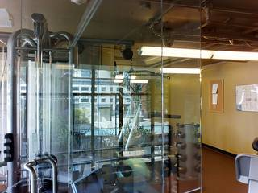
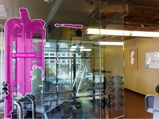
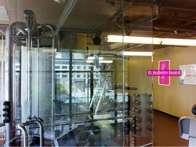

To determine the direction of the fitness area relative to the bulletin board, let's analyze the provided images:
- Image 1 shows a close-up of a bulletin board with a "GYM LOG" and a notice from the management team. This establishes the location of the bulletin board.
- Image 2 provides a wider view of the scene. In this image, we can see various pieces of fitness equipment (weight machines, dumbbells) and a glass partition. On the wall to the right of the viewer, the same bulletin board from Image 1 is visible.
- The question asks for the direction of the fitness area relative to the bulletin board, given that "facing the wall from the first bulletin board" is considered the "front."
- If you are standing and facing the wall where the bulletin board is located (facing "front"), you would have to turn your body to the left to see the fitness equipment and the rest of the gym area.
Therefore, relative to the bulletin board when facing the wall, the fitness area is to the left.
B
# No complex computation needed as the spatial relationship is clear from the wide shot. # In InputImages[1], the bulletin board is on the right wall. # Facing that wall, the gym equipment is to the left. ReturnAnswer("B")
[ReturnAnswer] Answer submitted: B
Task Analysis
The objective is to determine the relative 3D direction of the "fitness area" with respect to the "first bulletin board".
Coordinate System Resolution: The question defines a specific object-centric coordinate system:
- Origin: The 3D position of the first bulletin board.
- Front Vector ($\vec{f}$): The direction "facing the wall from the first bulletin board". This is the normal vector of the wall the bulletin board is attached to, pointing into the wall.
- Up Vector ($\vec{u}$): The world-space vertical axis (+Y).
- Right Vector ($\vec{r}$): Defined by the cross product $\vec{f} \times \vec{u}$ (or similar, to maintain a right-handed system).
- Target Vector ($\vec{v}$): The vector from the bulletin board's 3D centroid to the fitness area's 3D centroid.
The final answer will be determined by the projection of $\vec{v}$ onto $\vec{f}$ and $\vec{r}$.
Information Needs
- Object Identification: Precise identification and localization of the "first bulletin board" and the "fitness area" in the provided frames.
- 3D Geometry: 3D world coordinates for both objects and the orientation of the wall supporting the bulletin board.
- Spatial Layout: A top-down view (BEV) to sanity-check the relative positions and the "front" direction.
Computation Plan
-
Visual Identification:
- Use
show(InputImages)to inspect the scene. - Use
vlm.ask_with_thinkingto identify which object is the "first bulletin board" and where the "fitness area" is located. - Use
vlm.locateto get bounding boxes for the first bulletin board and the fitness area in a representative frame.
- Use
-
Segmentation:
- Use
tools.SAM3.segment_image_by_boxwith the VLM-provided coordinates to create masks for the first bulletin board and the fitness area. - Visually verify these masks using
seg.visualize(fi)andshow().
- Use
-
3D Reconstruction:
- Run
tools.Reconstruct.Reconstruct(InputImages)to obtain the 3D point cloud and camera poses.
- Run
-
Quantitative Spatial Analysis:
- Centroids: Calculate the 3D centroids of the bulletin board ($\vec{P}{board}$) and the fitness area ($\vec{P}{fitness}$) using
seg.get_centroid_3d(recon, ...). - Front Vector ($\vec{f}$):
- Extract all 3D points belonging to the bulletin board mask using
seg.get_masked_points(recon, ...). - Fit a plane to these points to find the wall's normal vector.
- Ensure the normal $\vec{f}$ points towards the wall (since the board is on the wall, the points are on the surface; the vector from the surface into the wall is the "front").
- Extract all 3D points belonging to the bulletin board mask using
- Right Vector ($\vec{r}$): Compute $\vec{r} = \vec{f} \times [0, 1, 0]$ (normalized).
- Relative Vector: Compute $\vec{v} = \vec{P}{fitness} - \vec{P}{board}$.
- Centroids: Calculate the 3D centroids of the bulletin board ($\vec{P}{board}$) and the fitness area ($\vec{P}{fitness}$) using
-
Direction Determination:
- Compute $dot_f = \vec{v} \cdot \vec{f}$ and $dot_r = \vec{v} \cdot \vec{r}$.
- If $|dot_f| > |dot_r|$:
- $dot_f > 0 \implies$ Front
- $dot_f < 0 \implies$ Back
- If $|dot_r| > |dot_f|$:
- $dot_r > 0 \implies$ Right
- $dot_r < 0 \implies$ Left
-
Cross-Validation:
- Render a BEV map using
recon.render_bev(masks=seg)to visually confirm if the fitness area is to the left, right, front, or back of the board given the wall's orientation.
- Render a BEV map using
Verification Checklist
[
{"priority": "HIGH", "description": "Verify that the 'first bulletin board' is correctly identified and segmented"},
{"priority": "HIGH", "description": "Confirm the 'front' vector correctly points into the wall from the board's perspective"},
{"priority": "HIGH", "description": "Ensure 3D centroids for both the board and fitness area are non-NaN and physically plausible"},
{"priority": "MEDIUM", "description": "Cross-check the computed direction (Right/Left/Front/Back) with the BEV visualization"},
{"priority": "LOW", "description": "Check if the distance between the two objects is consistent across reconstructed frames"}
]
Fallbacks
- Segmentation Failure: If
segment_image_by_boxfails or produces an empty mask, I will retry usingsegment_image_by_textwith a descriptive prompt (e.g., "the bulletin board on the wall"). - Reconstruction Noise: If the plane fit for the wall normal is noisy, I will use the VLM to describe the wall's orientation (e.g., "the wall is on the left side of the image") and combine this with the camera's pose to estimate $\vec{f}$.
- Ambiguous "First": If multiple boards exist and "first" is unclear, I will ask the VLM to define "first" based on the camera's entry path or image order.
{ "tool": "show", "args": { "image": "InputImages" } }
[image: show_0001]

=== Step 0 Execution Feedback === [SUCCESS] Code executed in 1.39s. [Variables] New/changed: result_0: NoneType [Inline Images] 2 image(s) attached below. Labels: InputImages [show() budget] 248/250 images remaining.
{ "tool": "feedback.ask_vlm", "args": { "visual_input": "InputImages[1]", "question": "Give the bounding box (x1, y1, x2, y2) in 0-1000 normalized scale for the bulletin board on the wall. Reply with ONLY the numbers." } }
=== Step 1 Execution Feedback === [ERROR] Skipped: LLM response was not in the required format.
{ "tool": "vlm.locate", "args": { "visual_input": "InputImages[1]", "question": "Give the bounding box (x1, y1, x2, y2) in 0-1000 normalized scale for the bulletin board on the wall. Reply with ONLY the numbers." } }
[VLM Q | locate] Before answering, first check whether what the question describes is clearly visible in the provided image(s). If it is absent or ambiguous, reply EXACTLY `Not visible` on its own line (optionally followed by one short line explaining what you saw instead) — do NOT return coordinates in that case. Only if the requested target is clearly and unambiguously present, answer the request below. Request: Give the bounding box (x1, y1, x2, y2) in 0-1000 normalized scale for the bulletin board on the wall. Reply with ONLY the numbers. [VLM A | locate] 414, 813, 582, 866
=== Step 2 Execution Feedback === [SUCCESS] Code executed in 91.25s. [Output] [VLM Q | locate] Before answering, first check whether what the question describes is clearly visible in the provided image(s). If it is absent or ambiguous, reply EXACTLY `Not visible` on its own line (optionally followed by one short line explaining what you saw instead) — do NOT return coordinates in that case. Only if the requested target is clearly and unambiguously present, answer the request below. Request: Give the bounding box (x1, y1, x2, y2) in 0-1000 normalized scale for the bulletin board on the wall. Reply with ONLY the numbers. [VLM A | locate] 414, 813, 582, 866 [Variables] New/changed: result_2: str [Tool Calls] 1 tool/VLM call(s) this step.
{ "tool": "vlm.locate", "args": { "visual_input": "InputImages[1]", "question": "Give the bounding box (x1, y1, x2, y2) in 0-1000 normalized scale for the fitness area (the area with gym equipment). Reply with ONLY the numbers." } }
[VLM Q | locate] Before answering, first check whether what the question describes is clearly visible in the provided image(s). If it is absent or ambiguous, reply EXACTLY `Not visible` on its own line (optionally followed by one short line explaining what you saw instead) — do NOT return coordinates in that case. Only if the requested target is clearly and unambiguously present, answer the request below. Request: Give the bounding box (x1, y1, x2, y2) in 0-1000 normalized scale for the fitness area (the area with gym equipment). Reply with ONLY the numbers. [VLM A | locate] 0 71 783 1000
=== Step 3 Execution Feedback === [SUCCESS] Code executed in 39.34s. [Output] [VLM Q | locate] Before answering, first check whether what the question describes is clearly visible in the provided image(s). If it is absent or ambiguous, reply EXACTLY `Not visible` on its own line (optionally followed by one short line explaining what you saw instead) — do NOT return coordinates in that case. Only if the requested target is clearly and unambiguously present, answer the request below. Request: Give the bounding box (x1, y1, x2, y2) in 0-1000 normalized scale for the fitness area (the area with gym equipment). Reply with ONLY the numbers. [VLM A | locate] 0 71 783 1000 [Variables] New/changed: result_3: str [Tool Calls] 1 tool/VLM call(s) this step.
=== Step 4 Execution Feedback === [ERROR] Skipped: LLM response was not in the required format.
{ "tool": "tools.SAM3.segment_image_by_text", "args": { "image": "InputImages[1]", "prompt": "bulletin board, gym equipment", "label": "objects" } }
=== Step 5 Execution Feedback === [SUCCESS] Code executed in 0.38s. [Variables] New/changed: result_5: PerFrameMask, frames=[1] [Tool Calls] 1 tool/VLM call(s) this step.
{ "tool": "show", "args": { "image": "result_5.visualize(1)" } }
[image: show_0002]

=== Step 6 Execution Feedback === [SUCCESS] Code executed in 0.54s. [Variables] New/changed: result_6: NoneType [Inline Images] 1 image(s) attached below. Labels: result_5.visualize(1) [show() budget] 247/250 images remaining.
{ "tool": "tools.SAM3.segment_image_by_box", "args": { "image": "InputImages[1]", "box": "tools.Geometry.normalized_to_pixel((813, 414, 866, 582), InputImages[1].width, InputImages[1].height)", "label": "bulletin_board" } }
=== Step 9 Execution Feedback === [SUCCESS] Code executed in 0.35s. [Variables] New/changed: result_9: PerFrameMask, frames=[1] [Tool Calls] 2 tool/VLM call(s) this step.
{ "tool": "tools.SAM3.segment_image_by_box", "args": { "image": "InputImages[1]", "box": "tools.Geometry.normalized_to_pixel((0, 71, 783, 1000), InputImages[1].width, InputImages[1].height)", "label": "fitness_area" } }
=== Step 10 Execution Feedback === [SUCCESS] Code executed in 0.41s. [Variables] New/changed: result_10: PerFrameMask, frames=[1] [Tool Calls] 2 tool/VLM call(s) this step.
=== Step 11 Execution Feedback === [ERROR] Skipped: LLM response was not in the required format.
{ "tool": "tools.Reconstruct.Reconstruct", "args": { "frames": "InputImages" } }
=== Step 12 Execution Feedback === [SUCCESS] Code executed in 0.61s. [Variables] New/changed: result_12: Reconstruction, frames=[0, 1] [Tool Calls] 1 tool/VLM call(s) this step.
=== Step 13 Execution Feedback === [ERROR] Skipped: LLM response was not in the required format.
=== Step 14 Execution Feedback === [ERROR] Skipped: LLM response was not in the required format.
[ReturnAnswer] Answer submitted: B
🛠️ Decided to use 2 tool(s)
[ { "name": "vlm__detect_one", "arguments": { "image_index": 0, "obj_name": "bulletin board" } }, { "name": "vlm__detect_one", "arguments": { "image_index": 1, "obj_name": "fitness area" } } ]
⚡ Executing vlm__detect_one...
{ "image_index": 0, "obj_name": "bulletin board" }
✅ vlm__detect_one completed (with generated image)
⚡ Executing vlm__detect_one...
{ "image_index": 1, "obj_name": "fitness area" }
✅ vlm__detect_one completed (with generated image)
🧠 Synthesizing results from 2 tool(s)...
Based on the provided images, the bulletin board is located on the wall to the right. Facing the wall from the bulletin board (front), the fitness area (including the gym equipment seen in the second image) is located to the left.
B
Based on the provided images, the bulletin board is located on the wall to the right. Facing the wall from the bulletin board (front), the fitness area (including the gym equipment seen in the second image) is located to the left.
B
Based on the provided images, the bulletin board is located on the wall to the right. Facing the wall from the bulletin board (front), the fitness area (including the gym equipment seen in the second image) is located to the left.
B
Task Analysis
The objective is to determine the relative direction of the "fitness area" from the "first bulletin board". The reference frame is defined by an object-centric coordinate system where the "front" direction is the vector starting from the first bulletin board and facing the wall it is on.
Coordinate System Resolution:
- Reference Point: 3D centroid of the "first bulletin board".
- Front Vector ($\vec{v}_{front}$): The vector normal to the wall, pointing from the bulletin board into the wall.
- Right Vector ($\vec{v}_{right}$): A vector perpendicular to $\vec{v}_{front}$ and the world-up vector (+Y), following a right-handed system (or intuitive layout).
- Target: 3D centroid of the "fitness area".
- Relative Direction: Determined by projecting the vector from the board to the fitness area onto the Front and Right axes.
Information Needs
- Object Identification: Visual confirmation of the "first bulletin board", the wall it is attached to, and the "fitness area".
- Segmentation Masks: Precise masks for the bulletin board and the fitness area to compute 3D centroids.
- 3D Geometry: A reconstruction of the scene to obtain world-space coordinates and camera poses.
- Orientation Data: The normal vector of the wall to define the "front" direction.
Computation Plan
-
Visual Identification & Grounding
- Use
show(InputImages[0], InputImages[1])to identify the objects. - Use
vlm.locateonInputImages[0]to find the center coordinates of the "first bulletin board" and the "fitness area". - Use
vlm.locateto find the "wall" the bulletin board is on.
- Use
-
Segmentation
- Segment the "first bulletin board" using
tools.SAM3.segment_image_by_pointsorsegment_image_by_boxusing the coordinates from the grounding step. - Segment the "fitness area" using
tools.SAM3.segment_image_by_textorsegment_image_by_box. - Segment the "wall" to help determine its orientation.
- Verification: Use
seg.visualize(fi)andshow()to ensure masks are accurate and non-empty.
- Segment the "first bulletin board" using
-
3D Reconstruction
- Run
recon = tools.Reconstruct.Reconstruct(InputImages)to generate the 3D point cloud and camera extrinsics. - Render a BEV map using
recon.render_bev(masks=seg)to get a top-down qualitative view of the layout.
- Run
-
Geometric Computation
- Centroids: Compute the 3D centroids $P_{board}$ and $P_{fitness}$ using
seg.get_centroid_3d(recon, frame=fi, object=...). - Front Vector ($\vec{v}_{front}$):
- Extract points from the wall mask using
seg.get_masked_points(recon, frame=fi, object='wall'). - Use
tools.Geometry.fit_ground_plane_ransac(or similar logic on the wall points) to find the wall's normal vector. - Ensure $\vec{v}_{front}$ points from the board toward the wall.
- Extract points from the wall mask using
- Right Vector ($\vec{v}_{right}$): Compute $\vec{v}{right} = \vec{v}{front} \times [0, 1, 0]$ (cross product with world-up).
- Relative Vector: Calculate $\vec{v}{target} = P{fitness} - P_{board}$.
- Centroids: Compute the 3D centroids $P_{board}$ and $P_{fitness}$ using
-
Direction Determination
- Compute $dot_{front} = \vec{v}{target} \cdot \vec{v}{front}$.
- Compute $dot_{right} = \vec{v}{target} \cdot \vec{v}{right}$.
- Logic:
- If $|dot_{front}| > |dot_{right}|$:
- $dot_{front} > 0 \implies$ Front
- $dot_{front} < 0 \implies$ Back
- If $|dot_{right}| > |dot_{front}|$:
- $dot_{right} > 0 \implies$ Right
- $dot_{right} < 0 \implies$ Left
- If $|dot_{front}| > |dot_{right}|$:
Verification Checklist
[
{"priority": "HIGH", "description": "Verify that the 'first bulletin board' and 'fitness area' are correctly segmented and identified"},
{"priority": "HIGH", "description": "Confirm the 'front' vector correctly points from the board into the wall"},
{"priority": "MEDIUM", "description": "Cross-reference the computed relative direction with the BEV visualization"},
{"priority": "MEDIUM", "description": "Ensure 3D centroids are not NaN and are physically plausible relative to the scene scale"},
{"priority": "LOW", "description": "Check if the result is consistent across both available frames"}
]
Fallbacks
- Reconstruction Failure: If
tools.Reconstructfails due to insufficient baseline between the 2 frames, I will usevlm.ask_with_thinkingto analyze the spatial layout across the frames, describing the scene's geometry to the VLM to get a qualitative direction. - Wall Normal Ambiguity: If the wall mask is too noisy to fit a plane, I will use the bulletin board's own 3D points to estimate its surface normal, as the board is assumed to be flush with the wall.
- Segmentation Failure: If text prompts fail for the fitness area, I will use
vlm.locateto provide a bounding box fortools.SAM3.segment_image_by_box.
# Display the images to confirm content show([InputImages[0], InputImages[1]]) # Ground the bulletin board and the wall in the first image board_coords = vlm.locate(InputImages[0], "Give the bounding box (x1, y1, x2, y2) in 0-1000 normalized scale for the bulletin board. Reply with ONLY the numbers.") wall_coords = vlm.locate(InputImages[0], "Give the bounding box (x1, y1, x2, y2) in 0-1000 normalized scale for the wall that the bulletin board is attached to. Reply with ONLY the numbers.") # Ground the fitness area in the second image fitness_coords = vlm.locate(InputImages[1], "Give the bounding box (x1, y1, x2, y2) in 0-1000 normalized scale for the fitness area (the gym equipment and space). Reply with ONLY the numbers.") print(f"Bulletin Board BBox: {board_coords}") print(f"Wall BBox: {wall_coords}") print(f"Fitness Area BBox: {fitness_coords}")
[image: show_0001] [VLM Q | locate] Before answering, first check whether what the question describes is clearly visible in the provided image(s). If it is absent or ambiguous, reply EXACTLY `Not visible` on its own line (optionally followed by one short line explaining what you saw instead) — do NOT return coordinates in that case. Only if the requested target is clearly and unambiguously present, answer the request below. Request: Give the bounding box (x1, y1, x2, y2) in 0-1000 normalized scale for the bulletin board. Reply with ONLY the numbers. [VLM A | locate] 113 0 886 1000 [VLM Q | locate] Before answering, first check whether what the question describes is clearly visible in the provided image(s). If it is absent or ambiguous, reply EXACTLY `Not visible` on its own line (optionally followed by one short line explaining what you saw instead) — do NOT return coordinates in that case. Only if the requested target is clearly and unambiguously present, answer the request below. Request: Give the bounding box (x1, y1, x2, y2) in 0-1000 normalized scale for the wall that the bulletin board is attached to. Reply with ONLY the numbers. [VLM A | locate] 0 0 1000 1000 [VLM Q | locate] Before answering, first check whether what the question describes is clearly visible in the provided image(s). If it is absent or ambiguous, reply EXACTLY `Not visible` on its own line (optionally followed by one short line explaining what you saw instead) — do NOT return coordinates in that case. Only if the requested target is clearly and unambiguously present, answer the request below. Request: Give the bounding box (x1, y1, x2, y2) in 0-1000 normalized scale for the fitness area (the gym equipment and space). Reply with O
=== Step 0 Execution Feedback === [SUCCESS] Code executed in 92.28s. [Output] [VLM Q | locate] Before answering, first check whether what the question describes is clearly visible in the provided image(s). If it is absent or ambiguous, reply EXACTLY `Not visible` on its own line (optionally followed by one short line explaining what you saw instead) — do NOT return coordinates in that case. Only if the requested target is clearly and unambiguously present, answer the request below. Request: Give the bounding box (x1, y1, x2, y2) in 0-1000 normalized scale for the bulletin board. Reply with ONLY the numbers. [VLM A | locate] 113 0 886 1000 [VLM Q | locate] Before answering, first check whether what the question describes is clearly visible in the provided image(s). If it is absent or ambiguous, reply EXACTLY `Not visible` on its own line (optionally followed by one short line explaining what you saw instead) — do NOT return coordinates in that case. Only if the requested target is clearly and unambiguously present, answer the request below. Request: Give the bounding box (x1, y1, x2, y2) in 0-1000 normalized scale for the wall that the bulletin board is attached to. Reply with ONLY the numbers. [VLM A | locate] 0 0 1000 1000 [VLM Q | locate] Before answering, first check whether what the question describes is clearly visible in the provided image(s). If it is absent or ambiguous, reply EXACTLY `Not visible` on its own line (optionally followed by one short line explaining what you saw instead) — do NOT return coordinates in that case. Only if the requested target is clearly and unambiguously present, answer the request below. Request: Give the bounding box (x1, y1, x2, y2) in 0-1000 normalized scale for the fitness area (the gym equipment and space). Reply with ONLY the numbers. [VLM A | locate] 0 0 1000 1000 Bulletin Board BBox: 113 0 886 1000 Wall BBox: 0 0 1000 1000 Fitness Area BBox: 0 0 1000 1000 [Variables] New/changed: board_coords: str wall_coords: str fitness_coords: str [Inline Images] 2 image(s) attached below. Labels: [InputImages[0], InputImages[1]] [Tool Calls] 3 tool/VLM call(s) this step. [show() budget] 248/250 images remaining.
# Get bounding box for a piece of gym equipment to represent the fitness area fitness_box_str = vlm.locate(InputImages[1], "Give the bounding box (x1, y1, x2, y2) in 0-1000 normalized scale for the large weight machine on the left. Reply with ONLY the numbers.") # Get bounding box for the bulletin board in the same image board_box_str = vlm.locate(InputImages[1], "Give the bounding box (x1, y1, x2, y2) in 0-1000 normalized scale for the bulletin board on the right wall. Reply with ONLY the numbers.") # Convert to pixels W1, H1 = InputImages[1].width, InputImages[1].height f_box = tools.Geometry.normalized_to_pixel([int(x) for x in fitness_box_str.split()], W1, H1) b_box = tools.Geometry.normalized_to_pixel([int(x) for x in board_box_str.split()], W1, H1) # Segment using boxes seg_fitness = tools.SAM3.segment_image_by_box(InputImages[1], f_box, "fitness area") seg_board = tools.SAM3.segment_image_by_box(InputImages[1], b_box, "bulletin board") # Verify masks show([InputImages[1], seg_fitness.visualize(seg_fitness.frame_indices[0]), seg_board.visualize(seg_board.frame_indices[0])]) # Perform reconstruction recon = tools.Reconstruct.Reconstruct(InputImages) # Get 3D centroids fi = 1 # Using frame index 1 p_fitness = seg_fitness.get_centroid_3d(recon, frame=fi, object=0) p_board = seg_board.get_centroid_3d(recon, frame=fi, object=0) print(f"Fitness Centroid: {p_fitness}") print(f"Board Centroid: {p_board}")
[VLM Q | locate] Before answering, first check whether what the question describes is clearly visible in the provided image(s). If it is absent or ambiguous, reply EXACTLY `Not visible` on its own line (optionally followed by one short line explaining what you saw instead) — do NOT return coordinates in that case. Only if the requested target is clearly and unambiguously present, answer the request below. Request: Give the bounding box (x1, y1, x2, y2) in 0-1000 normalized scale for the large weight machine on the left. Reply with ONLY the numbers. [VLM A | locate] 20 70 520 1000 [VLM Q | locate] Before answering, first check whether what the question describes is clearly visible in the provided image(s). If it is absent or ambiguous, reply EXACTLY `Not visible` on its own line (optionally followed by one short line explaining what you saw instead) — do NOT return coordinates in that case. Only if the requested target is clearly and unambiguously present, answer the request below. Request: Give the bounding box (x1, y1, x2, y2) in 0-1000 normalized scale for the bulletin board on the right wall. Reply with ONLY the numbers. [VLM A | locate] 813 414 867 582 [image: show_0002] Fitness Centroid: [-2.8548968 0.8263396 3.1973398] Board Centroid: [ 1.1736085 2.052884 -0.2000069]


=== Step 3 Execution Feedback === [SUCCESS] Code executed in 24.06s. [Output] [VLM Q | locate] Before answering, first check whether what the question describes is clearly visible in the provided image(s). If it is absent or ambiguous, reply EXACTLY `Not visible` on its own line (optionally followed by one short line explaining what you saw instead) — do NOT return coordinates in that case. Only if the requested target is clearly and unambiguously present, answer the request below. Request: Give the bounding box (x1, y1, x2, y2) in 0-1000 normalized scale for the large weight machine on the left. Reply with ONLY the numbers. [VLM A | locate] 20 70 520 1000 [VLM Q | locate] Before answering, first check whether what the question describes is clearly visible in the provided image(s). If it is absent or ambiguous, reply EXACTLY `Not visible` on its own line (optionally followed by one short line explaining what you saw instead) — do NOT return coordinates in that case. Only if the requested target is clearly and unambiguously present, answer the request below. Request: Give the bounding box (x1, y1, x2, y2) in 0-1000 normalized scale for the bulletin board on the right wall. Reply with ONLY the numbers. [VLM A | locate] 813 414 867 582 Fitness Centroid: [-2.8548968 0.8263396 3.1973398] Board Centroid: [ 1.1736085 2.052884 -0.2000069] [Variables] New/changed: fitness_box_str: str board_box_str: str W1: int H1: int f_box: list, len=4 b_box: list, len=4 seg_fitness: PerFrameMask, frames=[1] seg_board: PerFrameMask, frames=[1] recon: Reconstruction, frames=[0, 1] fi: int p_fitness: ndarray, shape=(3,), dtype=float32 p_board: ndarray, shape=(3,), dtype=float32 [Inline Images] 3 image(s) attached below. Labels: [InputImages[1], seg_fitness.visualize(seg_fitness.frame_indices[0]), seg_board.visualize(seg_board.frame_indices[0])] [Tool Calls] 7 tool/VLM call(s) this step. [show() budget] 245/250 images remaining.
import numpy as np # 1. Get 3D points of the bulletin board to estimate the wall normal points_board = seg_board.get_masked_points(recon, frame=fi, object=0) # Use SVD to find the normal to the best-fitting plane centroid_board_pts = np.median(points_board, axis=0) centered_board_pts = points_board - centroid_board_pts _, _, vh = np.linalg.svd(centered_board_pts) normal = vh[2, :] # The normal is the last row of Vh # Ensure the normal points INTO the wall. # In InputImages[1], the board is on the right wall. The camera is looking roughly forward. # The board's centroid is at x ~ 1.17, and the fitness area is at x ~ -2.85. # The wall is to the right of the room center. A vector pointing into the wall should have a positive X component. if normal[0] < 0: normal = -normal v_front = normal v_up = np.array([0, 1, 0]) v_right = np.cross(v_front, v_up) # 2. Target vector v_target = p_fitness - p_board # 3. Projections dot_front = np.dot(v_target, v_front) dot_right = np.dot(v_target, v_right) print(f"v_front: {v_front}") print(f"v_right: {v_right}") print(f"v_target: {v_target}") print(f"dot_front: {dot_front}") print(f"dot_right: {dot_right}") # Determine direction if abs(dot_front) > abs(dot_right): direction = "Front" if dot_front > 0 else "Back" else: direction = "Right" if dot_right > 0 else "Left" print(f"Resulting Direction: {direction}")
v_front: [ 0.97647 0.07692233 -0.20146778] v_right: [ 0.20146778 -0. 0.97646999] v_target: [-4.0285053 -1.2265445 3.3973467] dot_front: -4.71251916885376 dot_right: 2.5057931108432854 Resulting Direction: Back
=== Step 4 Execution Feedback === [SUCCESS] Code executed in 0.19s. [Output] v_front: [ 0.97647 0.07692233 -0.20146778] v_right: [ 0.20146778 -0. 0.97646999] v_target: [-4.0285053 -1.2265445 3.3973467] dot_front: -4.71251916885376 dot_right: 2.5057931108432854 Resulting Direction: Back [Variables] New/changed: points_board: ndarray, shape=(4038, 3), dtype=float32 centroid_board_pts: ndarray, shape=(3,), dtype=float32 centered_board_pts: ndarray, shape=(4038, 3), dtype=float32 vh: ndarray, shape=(3, 3), dtype=float32 normal: ndarray, shape=(3,), dtype=float32 v_front: ndarray, shape=(3,), dtype=float32 v_up: ndarray, shape=(3,), dtype=int64 v_right: ndarray, shape=(3,), dtype=float64 v_target: ndarray, shape=(3,), dtype=float32 dot_front: float32, shape=(), dtype=float32 dot_right: float64, shape=(), dtype=float64 direction: str
ReturnAnswer("C")
[ReturnAnswer] Answer submitted: C